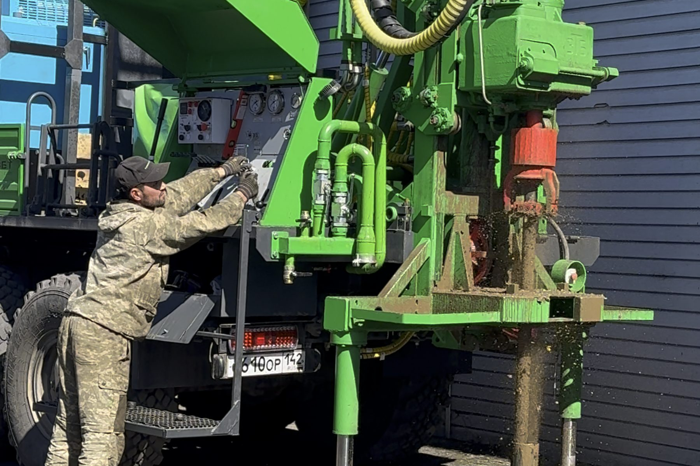
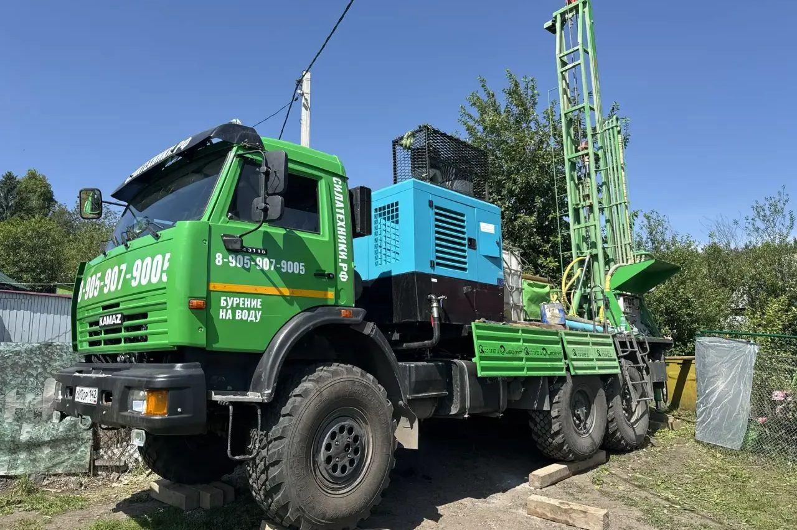
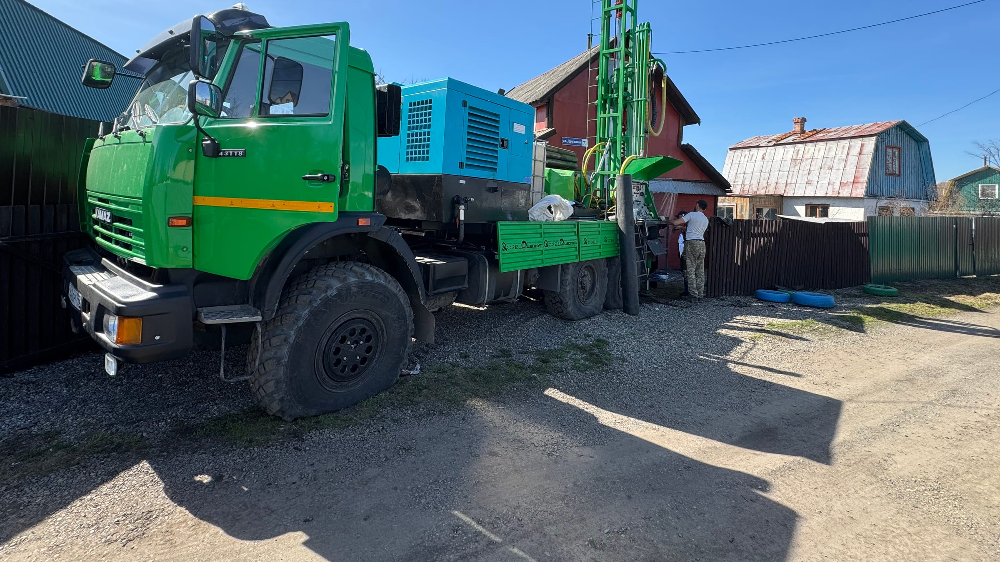
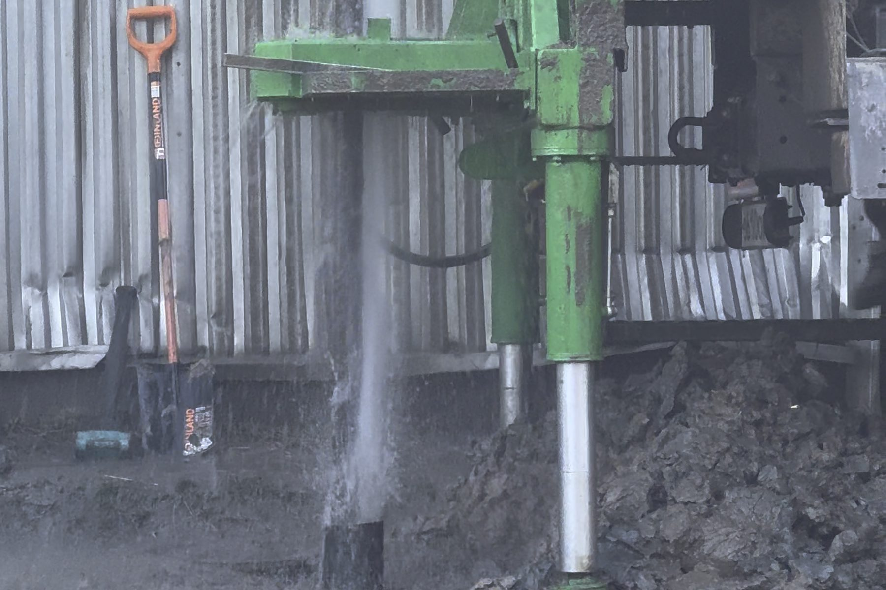
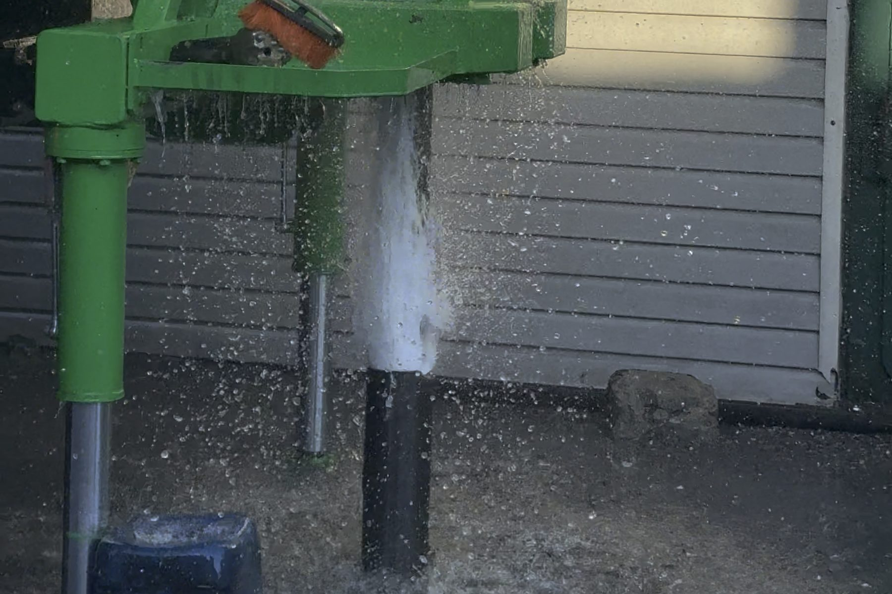
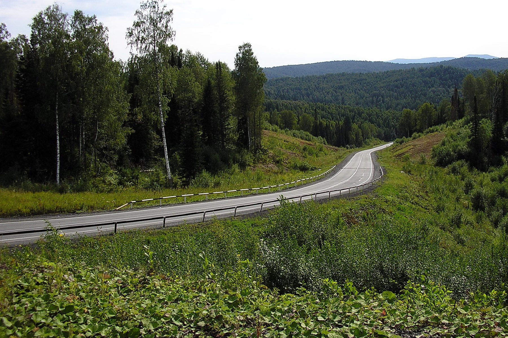
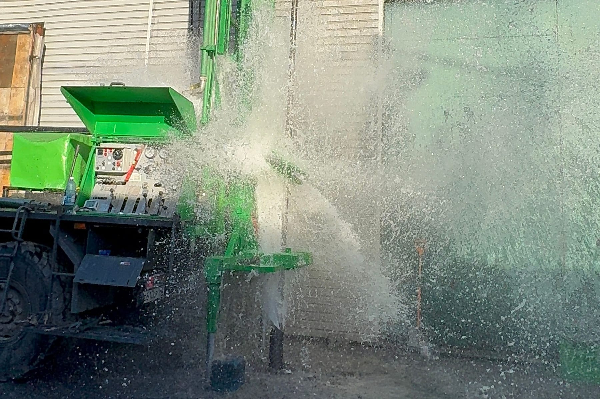
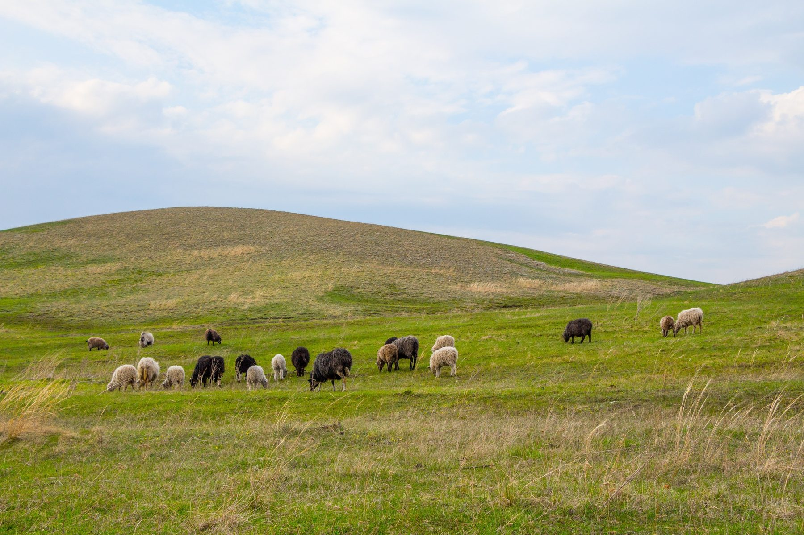
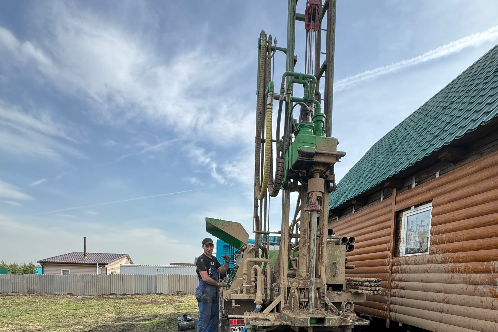

Статьи силатехники.рф — предпросмотр
50 статей о бурении и обслуживании скважин, сгруппированы по разделам. Отдельный хаб для просмотра всех текстов целиком — не боевой сайт и не индексируется поисковиками.
Цена и выбор · 15
 Расстояние от скважины до септика, дома и забора
Расстояние от скважины до септика, дома и забораСобрали действующие нормы с указанием, откуда каждая цифра и к чему она применима: СанПиН 2.1.3684-21 для нецентрализованных источников, СП 53 для садовых участков и зоны санитарной охраны.
Дата на сайте: 17 июля 2026 г.
 Нужна ли лицензия на скважину и какие нужны документы
Нужна ли лицензия на скважину и какие нужны документыТема обросла слухами: одни уверены, что за скважину штрафуют, другие — что оформлять не нужно ничего. Разбираем статью 19 Закона о недрах по условиям и объясняем, что такое паспорт скважины.
Дата на сайте: 5 июля 2026 г.
 Скважинный насос: как подобрать под свою скважину
Скважинный насос: как подобрать под свою скважинуЛогика «возьму помощнее, с запасом» со скважинным насосом не работает: избыточный насос выкачивает больше, чем отдаёт горизонт, и разрушает и себя, и скважину. Разбираем порядок подбора по четырём величинам.
Дата на сайте: 29 июня 2026 г.
 Кессон для скважины: когда нужен, а когда хватит адаптера
Кессон для скважины: когда нужен, а когда хватит адаптераКессон нужен не всегда — это первое, что стоит понять до покупки. Разбираем развилку по двум величинам: расчётной глубине промерзания и уровню грунтовых вод на участке.
Дата на сайте: 20 июня 2026 г.
 Обустройство скважины: что превращает трубу в водопровод
Обустройство скважины: что превращает трубу в водопроводПробуренная скважина — ещё не водоснабжение. Проходим путь воды от забоя до крана и перечисляем узлы на каждом участке: оголовок, кессон или адаптер, насос, гидроаккумулятор, автоматика, разводка.
Дата на сайте: 2 июня 2026 г.
 Где бурить скважину на участке: ошибки выбора места
Где бурить скважину на участке: ошибки выбора местаМесто выбирают один раз и навсегда: перенести скважину нельзя. Собрали решения, которые кажутся удобными сегодня и становятся проблемой через несколько лет — от подъезда для ремонта до будущей стройки.
Дата на сайте: 27 мая 2026 г.
 Абиссинская скважина: где работает, а где не стоит
Абиссинская скважина: где работает, а где не стоитЗабивной колодец дешевле в разы — и именно поэтому вокруг него столько споров. Разбираем, при каких грунтах и глубинах он работает, сколько живёт и почему на юге Кузбасса подходит не везде.
Дата на сайте: 3 мая 2026 г.
 Обсадная труба: сталь или пластик и почему это не всё
Обсадная труба: сталь или пластик и почему это не всёСпор «пластик или металл» обычно ведут в отрыве от глубины и пород. Разбираем свойства материалов и отдельно — неприятный факт: профильного ГОСТа на обсадную трубу для скважины на воду нет.
Дата на сайте: 27 апреля 2026 г.

Бурение под ключ: что входит и что обычно не входитФормулировка «под ключ» есть почти в каждом объявлении и означает у всех разное. Сверяем её с перечнем работ: какие пункты обязаны входить, какие выносят в допы и что спрашивать до подписания.
Дата на сайте: 21 апреля 2026 г.
 Глубина скважины для частного дома: сколько нужно
Глубина скважины для частного дома: сколько нужноУбеждение «чем глубже, тем чище» верно не всегда: на юге Кузбасса глубокий горизонт может дать воду хуже и дороже в обслуживании. Разбираем связь глубины с качеством, дебитом и ценой.
Дата на сайте: 15 апреля 2026 г.
 Гарантия на скважину: что она реально покрывает
Гарантия на скважину: что она реально покрывает«Даём гарантию» ничего не значит без указания предмета. Разбираем, что в скважине вообще может быть предметом гарантии, что от подрядчика не зависит и как это формулируется в договоре.
Дата на сайте: 9 апреля 2026 г.
 Сколько стоит скважина: из чего складывается цена
Сколько стоит скважина: из чего складывается ценаСравнивать подрядчиков по цене за метр — всё равно что выбирать дом по цене метра фундамента. Разбираем структуру сметы: что входит в метр, что считается отдельно и какие факторы двигают итог.
Дата на сайте: 3 апреля 2026 г.

Как выбрать буровую компанию: на что смотретьРезультат бурения скрыт под землёй, проверить его напрямую нельзя — отсюда особые критерии выбора. Собрали проверяемые признаки: техника, договор, состав работ, документы и то, что должно насторожить.
Дата на сайте: 28 марта 2026 г.
 Скважина или колодец: что выбрать для частного дома
Скважина или колодец: что выбрать для частного домаСравниваем два источника по дебиту, качеству воды, зависимости от сезона и обслуживанию — и считаем стоимость владения за десять лет, а не только цену на старте.
Дата на сайте: 22 марта 2026 г.
 Виды скважин на воду: чем различаются и какую выбрать
Виды скважин на воду: чем различаются и какую выбратьПесчаная, известняковая, абиссинская: разная конструкция, глубина, дебит и ресурс. Разбираем, что стоит за каждым названием и почему «артезианская» — юридический термин, а не марка качества.
Дата на сайте: 10 марта 2026 г.
Технология · 8
 Бурение скважины зимой: можно ли и что меняется
Бурение скважины зимой: можно ли и что меняетсяЗимой звонков меньше, и почти всегда по одной причине: люди думают, что бурить нельзя. Разбираем, что на морозе действительно меняется в технологии, а что осталось заблуждением.
Дата на сайте: 1 августа 2026 г.
 Геология юга Кузбасса: почему глубина везде разная
Геология юга Кузбасса: почему глубина везде разнаяВопрос «на какую глубину» звучит в каждом первом разговоре, и честный ответ — «зависит от участка». Разбираем разрез территории послойно и объясняем, почему два дома через дорогу берут воду с разных горизонтов.
Дата на сайте: 29 июля 2026 г.
 Скважина на даче: с чего начать и на чём не экономить
Скважина на даче: с чего начать и на чём не экономитьДача предъявляет к источнику другие требования, чем дом для постоянного жилья. Считаем сезонную потребность в воде по нормам СП 53 и разбираем, где упрощение оправдано, а где обернётся повторным бурением.
Дата на сайте: 26 июля 2026 г.
 Бурение на участке с уклоном и сложным рельефом
Бурение на участке с уклоном и сложным рельефомУклон меняет не глубину залегания воды, а условия работы: где встанет буровая, как подвести технику и куда пойдёт поверхностный сток от оголовка. Именно это чаще всего упускают при планировании.
Дата на сайте: 23 июля 2026 г.

Этапы бурения скважины: от выезда до первой водыСо стороны всё просто: приехала машина, покрутила, пошла вода. На деле это несколько технологических этапов — разбираем каждый и показываем, чем оборачивается пропуск любого из них.
Дата на сайте: 11 июля 2026 г.

Роторное и ударно-канатное бурение: чем различаютсяУдарно-канатный способ старше и медленнее, роторный быстрее и универсальнее. Но выбор определяется не возрастом технологии, а породами на участке — показываем, где каждый способ выигрывает.
Дата на сайте: 21 мая 2026 г.
 В какой сезон бурить скважину: сроки и состояние участка
В какой сезон бурить скважину: сроки и состояние участкаУ каждого сезона свои последствия, и они не сводятся к погоде. Сравниваем четыре сезона по срокам, загрузке бригад, состоянию участка после работ и удобству последующего обустройства.
Дата на сайте: 15 мая 2026 г.
- УРБ-2Д3 на КамАЗе: что установка может и чего нет
Разбираем паспортные данные УРБ-2Д3 по комплектациям: глубина зависит от вращателя и способа проходки, а не от одной цифры в рекламе. И объясняем, почему шасси решает не меньше, чем сама установка.
Дата на сайте: 16 марта 2026 г.
Проблемы и ремонт · 12
 Замена насоса в скважине: когда она правда нужна
Замена насоса в скважине: когда она правда нужнаНет воды — меняем насос. Логично, но примерно в половине случаев новый ведёт себя так же, потому что дело было не в нём. Проверяем гипотезу до покупки: что и в каком порядке измерить.
Дата на сайте: 23 июня 2026 г.
 Обвалилась скважина: можно ли её восстановить
Обвалилась скважина: можно ли её восстановитьОбвал редко случается внезапно: почти всегда ему предшествуют песок в воде и падение дебита. Разбираем, что происходит внутри, и оцениваем обратимость повреждения по глубине и месту обрушения.
Дата на сайте: 14 июня 2026 г.
 Анализ воды из скважины: когда и на что сдавать
Анализ воды из скважины: когда и на что сдаватьВода из новой скважины может выглядеть идеально и не проходить по железу, жёсткости или микробиологии — а для Кузбасса это типичный природный фон. Разбираем, какие показатели брать и что каждый говорит.
Дата на сайте: 11 июня 2026 г.
 Скважина даёт мало воды: почему падает дебит
Скважина даёт мало воды: почему падает дебитСкважина, которая давала полный напор, начинает захлёбываться. Разбираем причины по месту потери производительности — пласт, фильтр, ствол, насос — и показываем, что из этого восстановимо.
Дата на сайте: 5 июня 2026 г.

Прочистка скважины: какие способы действительно работаютМетодов прочистки много, и не все безопасны для обсадной колонны. Перебираем их по одному, оценивая риск для конструкции, и объясняем, в какой момент чистка уже не поможет.
Дата на сайте: 24 мая 2026 г.
 Ремонт скважины своими руками: что можно, а что нет
Ремонт скважины своими руками: что можно, а что нетЧасть работ действительно выполнима своими силами — обслуживание оголовка, проверка автоматики. Но некоторые вмешательства заканчиваются заклиненным насосом на глубине пятидесяти метров. Проводим границу.
Дата на сайте: 12 мая 2026 г.
 Срок службы скважины: от чего зависит ресурс
Срок службы скважины: от чего зависит ресурсОдни скважины работают полвека, другие требуют ремонта через три года. Разбираем ресурс как сумму решений — конструкция, материалы, качество освоения и режим эксплуатации — и считаем, что из этого решает владелец.
Дата на сайте: 9 мая 2026 г.
 Запах воды из скважины: как определить причину
Запах воды из скважины: как определить причинуЗапах — диагностический признак: тухлые яйца, болото и металл означают разные проблемы. Разбираем их по характеру и объясняем, что в них от геологии Кузбасса, а что от ошибок в скважине.
Дата на сайте: 30 апреля 2026 г.
 Скважина перемёрзла: как отогреть без последствий
Скважина перемёрзла: как отогреть без последствийПеремерзание почти всегда означает ошибку в обустройстве, а не аномальный мороз. Сначала о том, как безопасно восстановить подачу, — с отдельным списком приёмов, которые ломают скважину окончательно.
Дата на сайте: 18 апреля 2026 г.
 Пропала вода в скважине: что проверить по порядку
Пропала вода в скважине: что проверить по порядкуПрежде чем звонить, есть смысл исключить простые причины — часть устраняется за десять минут без инструмента. Дальше идут случаи, где нужна бригада. Разбираем по порядку, от дешёвого к дорогому.
Дата на сайте: 6 апреля 2026 г.
- Вода с песком из скважины: причины и что делать
Песок изнашивает насос, забивает сантехнику и сигнализирует о разрушении в стволе. Определяем причину по характеру взвеси и моменту появления — от ошибок освоения до разрушенного фильтра.
Дата на сайте: 25 марта 2026 г.
 Скважина заилилась: отчего это происходит
Скважина заилилась: отчего это происходитЗаиливание — самая частая причина падения дебита, и почти всегда его провоцирует режим использования: редкие включения и простои по несколько месяцев. Разбираем механизм и способы это предотвратить.
Дата на сайте: 13 марта 2026 г.
Города · 15
 Скважина в Красном Броде: участок рядом с угольным разрезом
Скважина в Красном Броде: участок рядом с угольным разрезомКрасный Брод стоит в зоне активной угледобычи, и это заметно сказывается на подземных водах. Собрали чек-лист проверок до бурения: что выяснить о водопонижении, уровнях и мониторинге в зоне влияния разреза.
Дата на сайте: 20 июля 2026 г.
 Скважины в Салаире: как древние породы кряжа влияют на воду
Скважины в Салаире: как древние породы кряжа влияют на водуСалаирский кряж — одно из старейших геологических образований региона, и породы здесь принципиально отличаются от равнинной части области. Прослеживаем, как это определяет и состав воды, и технологию бурения.
Дата на сайте: 14 июля 2026 г.
- Скважины в Полысаево: почему решает освоение, а не глубина
Две скважины по шестьдесят метров: одна работает пятнадцать лет, вторая заилилась через три года. Разница почти никогда не в глубине — она в освоении, той работе, которую заказчик обычно не видит.
Дата на сайте: 8 июля 2026 г.
- Скважины в Гурьевске: как устроена долговечная скважина
Заказчик сравнивает предложения по глубине, а ресурс определяет другое. Проходим конструкцию сверху вниз — оголовок, колонна, затрубное пространство, фильтр, отстойник — и смотрим, где закладывается долговечность.
Дата на сайте: 2 июля 2026 г.
 Скважина в Шерегеше: вода для дома, гостиницы и базы
Скважина в Шерегеше: вода для дома, гостиницы и базыВ Шерегеше у скважины часто другая задача: обеспечить гостиницу или базу в сезон пиковой нагрузки. Считаем потребность под неравномерное потребление и разбираем роль накопительной ёмкости.
Дата на сайте: 26 июня 2026 г.

Скважины в Таштаголе: вода в горных породах ШорииВ Горной Шории вода залегает не пластом, а в трещинах и зонах разлома — привычная логика «дойти до водоносного слоя» здесь работает иначе. Разбираем, как ищут горизонт в скальных породах.
Дата на сайте: 17 июня 2026 г.

Дебит скважины в Мысках: как его измеряют и что он даётГлубину называют в разговоре первой, но пользоваться вы будете кубометрами в час. Разбираем методику замера при опробовании и считаем суточную потребность дома, чтобы было с чем сравнивать.
Дата на сайте: 8 июня 2026 г.
 Скважины в Калтане: грунт, скорость проходки и фон
Скважины в Калтане: грунт, скорость проходки и фонСкорость бурения определяется не мощностью установки, а породой. Показываем переход от категории буримости к срокам и конструкции — и отдельно разбираем техногенный фон района золоотвалов.
Дата на сайте: 30 мая 2026 г.
 Скважины в Осинниках: отчего вода у соседей разная
Скважины в Осинниках: отчего вода у соседей разнаяДве скважины на соседних участках вскрывают разные горизонты — и вода из них отличается по железу, жёсткости и стабильности. Разбираем этот случай и объясняем, что выбирает горизонт за вас.
Дата на сайте: 18 мая 2026 г.
 Скважина в Междуреченске: рельеф решает больше геологии
Скважина в Междуреченске: рельеф решает больше геологииГород зажат между горами, и это отражается на всём: заезде техники, выборе площадки и отводе воды. Разбираем ограничения по логистике — именно они определяют технологию, сроки и смету.
Дата на сайте: 6 мая 2026 г.
 Скважина в Ленинске-Кузнецком: откуда берётся расчёт глубины
Скважина в Ленинске-Кузнецком: откуда берётся расчёт глубины«Пробурим, пока не найдём» — плохая стратегия, которую оплачивает заказчик. Разбираем, на какие данные опирается инженер до выезда: фондовые материалы, госмониторинг недр, паспорта соседних скважин.
Дата на сайте: 24 апреля 2026 г.

Скважины в Белово: почему у соседних посёлков разная водаБелово и прилегающие посёлки различаются по геологии сильнее, чем кажется по карте. Сопоставляем несколько типовых площадок района и показываем, что меняется в глубине, качестве воды и смете.
Дата на сайте: 12 апреля 2026 г.

Скважина в Киселёвске: что известно заранее, а что нетЗаказчику неудобно слышать «глубина определится по факту», но это честный ответ. Разделяем параметры на те, что фиксируются в договоре до работ, и те, что становятся известны только в процессе.
Дата на сайте: 31 марта 2026 г.
- Скважина в Прокопьевске: участок на старых шахтных полях
Прокопьевск — старый угольный район, подработанные территории здесь встречаются часто. Разбираем, что означает соседство затопленных выработок для скважины и как проверить участок до начала работ.
Дата на сайте: 19 марта 2026 г.
 Скважины в Новокузнецке: что под участком в разных районах
Скважины в Новокузнецке: что под участком в разных районахГород стоит на слиянии Томи и Кондомы, и под участками в пойме, на террасе и на склоне лежат разные породы. Разбираем город по типам площадок и показываем, что это меняет для скважины.
Дата на сайте: 7 марта 2026 г.